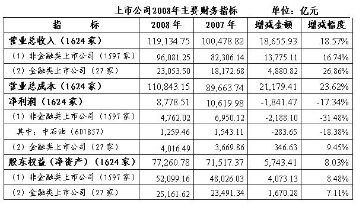

财政部会计司
我国上市公司2008年执行企业会计准则情况分析报告
2008年是我国上市公司全面执行企业会计准则的第二年，为了进一步研究企业会计准则执行情况，同时了解国际金融危机对我国经济的影响，我们继续采用“逐日盯市、逐户分析”的工作方式，跟踪分析了1,624家上市公司公开披露的2008年年度财务报告，经过几个月的努力，完成了分析报告。
本分析报告共分为六个部分，第一部分为上市公司2008年年度财务报告分析、第二部分为2008年上市公司执行企业会计准则情况、第三部分为企业会计准则的实施得到了国内外广泛认可、第四部分为我国应对金融危机在会计准则方面的对策主张、第五部分为相关政策建议、第六部分为未来工作计划安排。
一、上市公司2008年年度财务报告分析
截至2009年4月30日，除ST本实B（200041）外，我国沪深两市共有1,624家A、B股上市公司如期公布了2008年年度财务报告。通过对上市公司2008年年度财务报告进行综合分析，观察出我国经济运行存在以下显著特征：一是上市公司2008年增收不增利；二是上市公司存货、固定资产和银行贷款等资产减值损失巨大，一定程度上反映出企业产能过剩，结构不合理；三是新企业所得税法实施对上市公司业绩贡献显著；四是商业银行贷款增幅较大，上市公司资金比较充裕；五是我国虚拟经济规模较小尚未成熟，对实体经济发展的促进作用有待提升。
（一）上市公司2008年增收不增利
上市公司2008年有关财务指标汇总如下表所示：

分析表明，1,624家上市公司2008年营业总收入同比增长18.57%，2007年同比增幅24.07%，增幅下降了5.50个百分点。2008年净利润同比下降了17.34%，2007年同比增幅49.56%，增幅下降了66.90个百分点。2008年年末净资产同比增长8.03%，2007年同比增幅30.96%，增幅下降了22.93个百分点。1,624家上市公司2008年净资产收益率11.80%，比2007年(16.78%）下降了4.98个百分点，降幅达29.68%。
以上分析表明，我国上市公司2008年业绩出现了大幅度下滑，主要是营业总成本增幅超出了营业总收入增幅5.05个百分点，其中营业成本、期间费用和资产减值损失大幅度高于2007年，呈现出了增收不增利的显著特征。
（二）上市公司存货、固定资产和银行贷款等资产减值损失巨大，一定程度上反映出企业产能过剩，结构不合理
1,624家上市公司2008年年末资产总额为487,005.21亿元，其中，1,597家非金融类上市公司资产总额为114,931.44亿元，27家金融类上市公司资产总额为372,073.77亿元。资产减值损失总额为3,963.48亿元，占利润总额的－35.63%，同比增加了2,384.11亿元，增幅高达150.95%。其中，1,597家非金融类上市公司2008年末存货成本为18,309.23亿元，存货跌价准备累计金额为845.19亿元，2008年当年的存货跌价损失为690.00亿元，占存货跌价准备累计金额的81.64%；2008年末固定资产成本为39,727.29亿元，固定资产减值准备累计金额为707.56亿元，2008年当年的固定资产减值损失为369.38亿元，占固定资产减值准备累计金额的52.20%。其中，14家上市商业银行2008年的贷款减值损失为1,356.04亿元，占其利润总额的27.88%，同比增加了482.89亿元，增幅达55.30%，部分上市商业银行2008年贷款减值损失增幅超过了150%，个别超过了250%。14家上市商业银行贷款损失准备累计金额为4,744.54亿元，2008年当年贷款减值损失占贷款损失准备累计金额的28.58%。
以上分析表明，上市公司2008年度资产减值损失巨大，当年的资产减值损失均达到了历史新高，表现出产品销售不畅、存货积压严重，生产设备技术落后，产能过剩，结构不合理的状况，在一定程度上反映了国际金融危机对我国经济的影响。
（三）新企业所得税法实施对上市公司业绩贡献显著
1,624家上市公司2008年实现利润总额（税前利润）11,124.88亿元，同比减少了3,122.49亿元，降幅为21.92%。实际负担的所得税费用为2,346.37亿元，同比减少了1,281.02亿元，降幅达35.32%，实际负担的企业所得税税率为21.09%，比2007年的25.79%下降了4.7个百分点，企业的实际所得税负明显下降。2008年净利润降幅17.34%，低于利润总额降幅21.92%达4.58个百分点。
1,597家非金融类上市公司2008年实现利润总额（税前利润）6,044.65亿元，实际负担的所得税费用为1,282.63亿元，实际负担的企业所得税税率为21.22%，非金融类上市公司2008年净利润降幅较利润总额降幅减少了1.83个百分点。
27家金融类上市公司2008年实现利润总额（税前利润）5,080.23亿元，实际负担的所得税费用为1,063.75亿元，实际负担的企业所得税税率为20.94%；金融类上市公司净利润增幅较利润总额增幅增加了11.45个百分点。
以上分析表明，我国企业包括上市公司2008年1月1日开始执行《中华人民共和国企业所得税法》，企业所得税税率由33%下调为25%，新企业所得税法改革明显减轻了上市公司负担,较大幅度提升了上市公司业绩。
（四）商业银行贷款增幅较大，上市公司资金比较充裕
1,597家非金融类上市公司2008年经营活动现金流量净额为8,630.67亿元，筹资活动现金流量净额为4,818.13亿元，投资活动现金流量净额为-12,599.39亿元，2008年年末总体现金流量净额为12,518.07亿元，表明1,597家非金融类上市公司滞留在银行账户的资金为12,518.07亿元。
1,597家非金融类上市公司2008年实际从银行取得借款38,906.90亿元，同比增加10,048.49亿元，增幅高达34.82%。相关财务费用主要是利息费用为1,359.02亿元，同比增加了349.38亿元，增幅高达34.60%。1,597家非金融类上市公司2008年末实际持有的货币资金为12,518.07亿元，比2007年末净增加了784.48亿元，增幅为6.69%。
14家上市商业银行2008年度发放贷款及垫款净增加额为25,921.22亿元，同比增加3,829.45亿元，增幅为17.33%。14家上市商业银行在2008年末持有发放贷款和垫款合计为169,231.87亿元，占14家上市商业银行资产总额的48.00%，同比增加24,391.08亿元，增幅为16.84%。
以上分析表明，商业银行贷款增幅较大，非金融类上市公司2008年末滞留在银行账户的资金达12,518.07亿元，反映出上市公司资金比较充裕。
（五）我国虚拟经济规模较小尚未成熟，对实体经济发展的促进作用有待提升
虚拟经济通常是指证券、期货、期权等虚拟资本的交易活动。我国现阶段主要是股票、债券和基金等基础金融产品，在企业会计准则和财务报告中归类为交易性金融资产和可供出售金融资产，主要依据资本市场公开交易价格即公允价值进行计量，交易性金融资产公允价值变动计入当期损益，可供出售金融资产公允价值变动计入所有者权益。
1,624家上市公司2008年末持有的交易性金融资产和可供出售金融资产合计为39,664.01亿元，占资产总额的8.14%。其中，27家金融类上市公司持有的交易性金融资产、衍生金融资产、可供出售金融资产合计为38,862.59亿元，占金融类上市公司资产总额的10.44%。14家上市商业银行2008年末持有的交易性金融资产、衍生金融资产、可供出售金融资产合计为30,110.07亿元，占上市商业银行资产总额的8.62%。2008年，1,624家上市公司交易性金融资产公允价值变动计入当期损益的金额为-501.33亿元，可供出售金融资产公允价值变动计入股东权益的金额为-2,206.65亿元。14家上市商业银行2008年实现利息收入15,929.06亿元，占营业收入总额的88.24%；实现手续费及佣金收入1,683.17亿元，占营业收入总额的9.32%；营业收入主要依赖于存贷款利差收入，占比接近90%，中间业务收入在营业收入中的占比不足10%。
以上分析表明，相对于发达国家而言，我国金融产品交易规模较小, 虚拟经济发展还不很成熟，金融创新不够，商业银行仍然主要从事传统的存贷款业务，金融服务于实体经济存在较大差距，对实体经济发展的促进作用有待提升。
二、2008年上市公司执行企业会计准则情况
企业会计准则是1,624家上市公司报告其财务状况、经营成果和现金流量的唯一标准。本部分将结合上市公司2008年年度财务报告分析，从多角度研究上市公司2008年执行企业会计准则情况。分析表明，企业会计准则2008年在上市公司得到了持续平稳有效实施。
（一）从2008年年度财务报告总体分析上市公司执行企业会计准则情况
上市公司根据统一的会计准则各项规定，按照统一的报表格式、列示项目、指标计算等编制了2008年合并财务报表和个别财务报表，并按照会计准则规定的披露顺序、项目和内容在附注中提供了相关可比的信息。2008年年报数据与2007年的比较数据更具可比性，因为我国上市公司从2007年1月1日起开始执行企业会计准则，2008年为执行企业会计准则的第二年。
根据收入等会计准则，1,624家上市公司确定了2008年实现的营业总收入119,134.75亿元、营业总成本110,843.15亿元、营业利润10,057.90亿元、利润总额11,124.88亿元和净利润8,778.51亿元，并与2007年同口径相关数据比较，分析得出了2008年增收不增利的结论。1,624家上市公司按照企业会计准则确定2008年的资产总额为487,005.21亿元、负债总额为409,744.43亿元、股东权益总额为77,260.78亿元。年报分析得出的2008年上市公司巨额资产减值损失3,963.48亿元，主要由存货跌价损失、固定资产减值损失和贷款减值损失构成，其中，存货跌价损失690.00亿元是按照存货可变现净值低于成本的差额确定，固定资产减值损失369.38亿元是根据固定资产可收回金额低于账面价值的差额确定，贷款减值损失1,356.04亿元是按照贷款预计未来现金流量现值与摊余成本的差额并结合监管要求确定。新企业所得税法实施对上市公司业绩的贡献，是公司执行所得税会计准则反映的结果，根据新企业所得税法和所得税会计准则，1,624家上市公司确定的所得税费用为2,346.37亿元，其中主要为当期所得税费用,也包括部分递延所得税费用。上市公司资金比较充裕以及虚拟经济规模较小尚未成熟等情况，是上市公司执行现金流量表会计准则和金融工具确认和计量会计准则反映的事实，根据现金流量表会计准则，1,597家非金融类上市公司2008年末实际持有的货币资金为12,518.07亿元；根据金融工具确认和计量会计准则，1,624家上市公司2008年末持有的采用公允价值计量的交易性金融资产和可供出售金融资产合计为39,664.01亿元。
1,624家上市公司2008年年报均经过了具有证券期货资格的会计师事务所审计,审计的依据为企业会计准则和审计准则，注册会计师出具的审计意见不仅对年报数据的可靠性提供了合理保证，而且表明了企业会计准则的持续有效实施。1,624家上市公司中，有1,511家公司的年报被注册会计师出具了标准审计意见，占比为93.04%。被出具非标准审计意见的公司仅有113家，占比为6.96%；其中，被出具带强调事项段的无保留意见的上市公司有78家，被出具保留意见的上市公司有18家，被出具无法表示意见的上市公司有17家。由国际“四大”会计师事务所（以下简称四大）审计的111家上市公司中，仅有1家公司被出具了保留意见的审计报告。
（二）从A+H股年报分析企业会计准则执行情况
2007年12月，我国内地会计准则与香港财务报告准则实现了等效并签署了联合声明，此后两地又建立了会计准则持续等效机制。除联合声明规定允许存在的会计准则极少差异（如，按照内地会计准则部分长期减值损失不得转回）外，上市公司根据企业会计准则编制的A股财务报告和按照香港财务报告准则编制的H股财务报告应当相互一致。
1,624家上市公司共有57家同时在香港发行了H股。根据A+H股上市公司公布的2008年年报，57家A+H股上市公司2008年按照企业会计准则报告的净利润为5,442.23亿元，净资产为42,595.51亿元；按照香港财务报告准则报告的净利润为5,572.49亿元，净资产为43,003.07亿元。内地准则报告的净利润小于香港准则报告的净利润130.26亿元，净利润差异率为2.39%；内地准则报告的净资产小于香港准则报告的净资产407.56亿元，净资产差异率为0.96%。2007年净利润差异率和净资产差异率分别为4.69%和2.84%，2008年净利润差异率和净资产差异率分别为2.39%和0.96%，与2007年相比分别下降了2.30%和1.88%。
57家A+H股上市公司的两地年报显示，导致A+H股上市公司净利润和净资产仍存差异的原因主要是两家保险公司的保费收入、保单取得成本以及保险合同准备金差异。香港对于混合性合同分拆确认保费收入，内地没有进行分拆；内地对于保单取得成本一次性计入当期损益，香港分期计入当期损益；内地对于保险合同准备金考虑监管要求，香港按照会计准则规定计量。这三项差异合计对净利润的影响为140.18亿元，对净资产的影响为675.81亿元。如果剔除现存两家保险公司差异后，净利润差异总额由130.26亿元缩小到-9.92亿元，净利润差异率由2.39%缩小到-0.18%；净资产差异总额由407.56亿元缩小到-268.25亿元，净资产差异率由0.96%缩小到-0.63%。两家保险公司存在的差异属于会计准则执行问题，我们已与有关部门协商，力争在2009年年度财务报告中予以消除。
以上分析表明，在两地建立会计准则持续等效机制后，财政部针对两地准则实施中的问题做出了消除差异的相关规定并提出了明确要求，2008年57家A+H股上市公司大幅度消除了原有差异，净利润和净资产的差异率由2007年的4.69%和2.84%降为2008年的2.39%和0.96%。在剔除两家保险公司的执行差异后，按照两地准则编制的财务报告差异接近完全消除。这一事实进一步验证了两地会计准则等效的成果，而且从这一角度表明企业会计准则在上市公司得到了持续有效实施。
（三）从具体准则项目应用分析企业会计准则执行情况
我们对38项具体准则执行情况进行了逐项分析，分析结果表明，每项具体准则2008年在上市公司均得到了持续有效实施，但有些情况值得关注和进一步研究。限于篇幅，在此仅重点说明以下准则项目。
1．投资性房地产准则
1,624家上市公司有690家存在投资性房地产，主要包括房屋、建筑物，也有部分土地使用权。其中，自用房地产转为投资性房地产的公司有111家；存货转为投资性房地产的公司有28家；投资性房地产转为固定资产的公司有26家；投资性房地产转为存货的公司有2家。
存在投资性房地产的690家上市公司中，采用成本计量模式为670家，采用公允价值模式的为20家，公允价值变动净收益为-515.90万元。投资性房地产公允价值确定的方法主要有评估价格（14家公司）、第三方调查报告（1家公司）及参考同类同条件房地产的市场价格（5家公司）。4家公司披露了由成本计量模式变更为公允价值计量模式。
部分投资性房地产转换和部分投资性房地产公允价值计量方法值得关注。
2．资产减值准则
1,624家上市公司中有1,089家公司存在资产减值，资产减值损失为3,963.48亿元，占利润总额的-35.63%，同比增加了2,384.11亿元，增幅达150.95%。其中，存货跌价损失、固定资产减值损失和贷款减值损失所占比重最大。
1,624家上市公司中有571家公司存在商誉。其中,对商誉进行了减值测试的有553家公司；18家公司未对商誉进行减值测试。160家上市公司对商誉计提了减值准备，计提金额为27.94亿元，占2008年资产减值损失总额的0.70%。
上市公司披露了长期资产公允价值的确定方法、资产预计的未来现金流量、涵盖期间和折现率等。793家公司披露了可收回金额的确定依据，占存在资产减值的上市公司总数的72.82%；也有一些公司没有充分披露资产减值迹象。
值得关注的是，上市公司2008年巨额资产减值损失也不排除某些公司过度计提资产减值准备，人为调低2008年利润以实现2009年业绩回转的可能性，这一问题需要进一步研究。
3．股份支付准则
1,624家上市公司中实施股份支付计划的共有40家，以权益结算股份支付的有32家，以现金结算股份支付的有11家，其中，3家上市公司同时具有现金结算和权益结算两种股份支付计划。股份支付的授予对象多为公司董事、监事、高管及业务骨干。2008年因以现金结算的股份支付确认的费用总额为-26.68亿元，因以权益结算的股份支付确认的费用总额为16.15亿元。
8家上市公司以股票作为支付工具，24家上市公司以股票期权作为支付工具，同时具有股票和股票期权两种权益支付工具的有1家；以虚拟期权作为支付工具的有2家，以现金股票增值权作为支付工具的有9家。29家上市公司明确披露了权益工具公允价值的确定方法，7家上市公司未予明确披露。
实施股份支付计划的40家上市公司中，2008年修改股份支付计划的有7家；取消股份支付计划的有1家；结算了股份支付计划的有10家。26家上市公司披露了可行权条件，其中以服务期限作为可行权条件的有6家；以业绩条件作为可行权条件的有5家；以非市场条件作为可行权条件的有15家。其中，修改或取消股份支付计划值得关注。
4．债务重组准则
1,597家非金融类上市公司中，2008年完成债务重组的上市公司有296家，其中，220家公司作为债务人获得了债务重组收益109.30亿元。
2008年完成债务重组的296家上市公司中，与控股股东或控股股东子公司进行债务重组的有16家，实施破产重整的有10家，实施和解的有69家。完成债务重组的296家上市公司中，以资产清偿债务的有45家，债转股的有5家，修改债务条件的有93家；采用以上三种方式组合进行债务重组的有6家。另有147家上市公司债务重组类型披露不清。
上述与控股股东或控股股东的子公司进行的债务重组，实施破产重整与和解的情况，以及债务重组披露不清等值得关注和进一步研究。
5．企业合并准则
1,597家非金融类上市公司中有433家公司2008年实现企业合并。其中，同一控制下的企业合并的有185家，非同一控制下的企业合并的有296家，53家的企业合并既有同一控制下的企业合并又有非同一控制下的企业合并，另有5家未披露企业合并的类型。
实现企业合并的433家上市公司中，采用控股合并的411家，采用吸收合并的25家，采用新设合并的5家，其中，既有控股合并又有吸收合并的8家。披露了企业合并的判断依据的有420家，另有13家未予披露。2008年因企业合并产生的商誉合计为242.43亿元，计入当期损益的金额为3.87亿元。
企业合并中业务的判断依据以及未按规定披露企业合并的类型和相关判断依据的情况值得关注和进一步研究。
（四）从单个上市公司分析企业会计准则执行情况
年报分析工作实际上是以单个上市公司执行企业会计准则情况为基础的，先分析1,624家上市公司每家公司执行各项具体准则的情况，再分析每一具体准则项目在1,624家上市公司的执行情况，在此基础上进行A+H股报表差异分析和年度财务报告总体分析，同时分析每家公司注册会计师出具的审计意见。限于篇幅，在此仅列出某上市公司实际执行企业会计准则的年度财务报告实例（附后）。
该公司2008年财务报告由三部分构成，一是注册会计师出具的审计报告，二是该公司集团合并报表和其母公司个别报表，三是报表附注。
第一部分，注册会计师出具的审计报告
根据我国相关法律规定，上市公司财务报告必须经过法定程序许可的具有证券期货资格的会计师事务所注册会计师进行审计并出具审计报告，审计结果由注册会计师签字盖章，并加盖会计师事务所公章。我国现有7,200多家会计师事务所，截至2008年12月31日，有资格为上市公司提供年度财务报告审计的会计师事务所有60家（名单附后）。
某会计师事务所为该公司出具了标准审计报告，其内容如下：
一是表明对该公司的审计范围，包括：2008年的合并资产负债表和资产负债表、合并利润表和利润表、合并股东权益变动表和股东权益变动表、合并现金流量表和现金流量表以及报表附注。
二是表明公司管理层对财务报表的责任，包括:（1）设计、实施和维护与财务报表编制相关的内部控制，以使财务报表不存在由于舞弊或错误而导致的重大错报；（2）选择和运用恰当的会计政策；（3）作出合理的会计估计。
三是表明注册会计师的责任，包括：在实施审计工作的基础上对财务报表发表审计意见。按照中国注册会计师审计准则的规定执行审计工作。审计工作涉及实施审计程序，以获取有关财务报表金额和披露的审计证据。选择的审计程序取决于注册会计师的判断，包括对由于舞弊或错误导致的财务报表重大错报风险的评估。在进行风险评估时，考虑与财务报表编制相关的内部控制，以设计恰当的审计程序。审计工作还包括评价管理层选用会计政策的恰当性和作出会计估计的合理性，以及评价财务报表的总体列报。
四是表明审计意见，包括：该公司财务报表已经按照企业会计准则的规定编制，在所有重大方面公允反映了公司2008年12月31日的合并财务状况和财务状况以及2008年度的合并经营成果和经营成果以及合并现金流量和现金流量。
第二部分，该公司集团合并报表和其母公司个别报表
本部分为该集团合并资产负债表、合并利润表、合并现金流量表和合并所有者权益变动表各项目的数据，以及母公司资产负债表、利润表、现金流量表和所有者权益变动表各项目的数据。
上述报表的所有项目均符合《企业会计准则第30号——财务报表列报》和《企业会计准则第33号——合并财务报表》的列报要求，报表的栏目为2008年的合并数据和母公司数据，以及上年度的相关比较数据。
每张报表之下注明：此财务报表已于2009年×月×日获董事会批准，由公司法定代表人、公司财务负责人签名并加盖公司公章。这一做法是《中华人民共和国会计法》的法定要求。公司法定代表人签名，意味着该法定代表人对公司公布的财务报表的真实性和完整性负责。
第三部分，报表附注
该公司报表附注全面充分，资料详实，全面披露了公司基本情况、财务报表编制基础、主要会计政策和会计估计以及合并范围等，同时对每张报表的数据都按照具体准则规定披露了大量的附表，详细说明财务报表数据的构成和增减变动情况，有助于财务报告使用者阅读和全面理解该公司当年、上年财务状况、经营成果和现金流量相关信息，预测该公司未来发展趋势，从而做出投资等相关决策。
个案分析结果表明，该上市公司2008年较好地执行了企业会计准则。
三、企业会计准则的实施得到了国内外广泛认可
企业会计准则所规定的系列会计政策能够促进企业稳健经营和可持续发展，以此形成的财务报告有利于促进投资者投资和完善资本市场，实现了会计作为“国际通用的商业语言”的功能，又为中国企业进入国际市场进行投融资奠定了会计基础，也可帮助外国投资者为促进中国经济发展做出贡献。有鉴于此，企业会计准则建设完成并于2007年1月1日起在上市公司实施后，得到了国内外的广泛认可。
（一）企业会计准则得到了国内企业认可，实施范围不断扩大
企业会计准则在上市公司的有效实施，对我国非上市企业起到了很好的示范作用，2008年实施范围扩大到所有非上市中央国有企业、所有非上市商业银行、有关金融机构以及非上市的所有商业保险公司。2009年1月1日起，实施范围进一步扩大，包括农村信用社和全国大部分省（区、市）的国有企业等。
截至2009年5月31日，除所有上市公司外，我国已有35个省（区、市）的大中型企业执行了企业会计准则。其中，山西、云南、深圳等省、市的大中型企业全部执行了企业会计准则；北京、江苏、浙江、安徽、江西、山东、湖北、广东、重庆、陕西、宁夏、新疆生产建设兵团、宁波等省（区、市）属国有企业全部执行了企业会计准则；天津、河北、内蒙古、辽宁、吉林、黑龙江、上海、河南、湖北、广西、贵州、海南、四川、甘肃、青海、新疆、厦门、大连、青岛等省（区、市）的部分大中型企业执行了企业会计准则；其他地区也在为2010年全面实施企业会计准则做好相关准备工作。
各省（区、市）积极采取了各种有效措施，认真组织企业会计准则在本地区的实施工作。有些省（区、市）成立了企业会计准则实施联合工作组，加强财政与国资、税务、证券监管等部门的协调配合，共同推进企业会计准则的实施。云南省财政厅与云南财经大学会计学院合作组织培训企业会计准则，2006年－2008年间累计举办了60期培训班，受训会计人员达2万余人。黑龙江、广东等省财政厅与国资委联合调研，研究企业会计准则平稳过渡的办法，对省属国有企业进行模拟测试，同时狠抓了人员培训、清理企业户数、清查资产、完善制度、改造财务信息系统等工作。山西省财政厅将国有企业执行企业会计准则的情况列入2008年《中华人民共和国会计法》执法检查的重点。河南、上海等省、市组织对2008年已执行企业会计准则的国有企业进行财务报告分析和实地调研。浙江省财政厅建立了企业会计准则执行中的紧急援助机制，及时帮助企业解决企业会计准则执行过程中遇到的疑难问题。新疆、广东、湖南、大连等省（区、市）建立了企业会计准则实施联系点制度，及时掌握和解决企业会计准则执行过程中的情况和问题。
根据企业会计准则实施范围不断扩大的情况，到2010年左右，基本可以实现我国所有大中型企业全面实施企业会计准则的目标，除小企业执行单独的简易会计制度外，将在全国大中型企业范围内统一企业会计标准，切实解决企业之间会计标准各异和财务报告信息口径不一等问题，从而全面提升我国企业的管理水平和会计信息质量，增强企业的可持续发展能力。
（二）企业会计准则得到了国际社会认可，会计准则国际趋同等效成果显著
首先，我国企业会计准则得到了国际会计准则理事会（IASB）认可。2005年企业会计准则形成过程中，我们邀请了国际会计准则理事会专家参与其中，以便IASB充分了解中国新兴市场经济和转型经济的特点，2005年11月，中国会计准则委员会与国际会计准则理事会签署了企业会计准则与国际财务报告准则实现趋同的联合声明。企业会计准则2007年1月1日起在我国1,570家上市公司开始实施，经过一年各方面的共同努力，经受了实践检验并取得了成功。财政部会计司采用了“逐日盯市、逐户分析”的方式，对1,570家上市公司2007年年报进行全面深度分析，形成了近两万字的《关于我国上市公司2007年执行新会计准则情况分析报告》（以下简称2007年分析报告），以每家上市公司执行企业会计准则为基础，从多角度论证了企业会计准则得到了全面平稳有效实施。
国际会计准则理事会非常关注中国企业会计准则的实施情况，并研究了2007年分析报告，2008年5月派专家对我国上市公司执行企业会计准则情况进行了考察，独立召开了若干次上市公司、会计师事务所、证券公司和基金公司等分组座谈会，实地确认了企业会计准则在上市公司有效实施的事实。在此基础上，中国会计准则委员会与国际会计准则理事会建立了会计准则持续趋同的工作机制，签署了相关备忘录。中国企业会计准则建设和实施，得到国际会计准则理事会的认可,在国际社会产生了深远影响。世界银行也给予了高度评价，认为“中国会计改革与发展项目”是世界银行软贷款项目中最为成功的范例。
其次，企业会计准则得到了欧盟资本市场的认可。中欧会计准则等效早在2005年2月就列入中欧财金对话，并于当年11月签署了会计准则国际趋同及双边合作联合声明。此后，财政部会计司和欧盟市场司多次举行了深入的磋商和技术会谈，就会计准则国际趋同和中欧会计准则等效评估交换意见。欧盟委员会先后多次独立组织实地调研，考察我国企业会计准则在上市公司的执行情况，研究了2007年分析报告，认为中国会计准则执行情况良好。
2008年4月22日，欧盟委员会就欧盟第三国会计准则等效问题发布正式公告，建议在2011年底前欧盟委员会允许中国证券发行者在进入欧洲市场时使用中国会计准则。该建议于2008年10月23日经欧洲议会投票表决批准，于11月14日由欧盟成员国代表组成的欧盟证券委员会通过，决定自2009年起至2011年底的过渡期内，允许中国企业进入欧洲市场时按照中国会计准则编制财务报告，不需要再根据国际财务报告准则进行调整。
欧盟认可我国会计准则标志着财政部在中欧财金对话框架下推进中欧会计等效工作取得突破性成果，将大大减少我国企业在欧盟上市的财务报告编制成本，有助于贯彻中央“走出去”战略，促进欧盟认可我国完全市场经济地位，解决欧盟对我国企业出口的反倾销问题，改善我国企业出口环境。
第三，中美会计合作正在有序推进。我国的石油石化、电力通信、金融保险等特大型企业已在美国资本市场上市，需要按照美国会计准则编制财务报告，全面公开披露上述企业会计及相关信息。这不仅增加了我在美上市公司财务报告的编制成本和审计成本，而且还涉及其他相关问题。在我国会计准则与国际财务报告准则实现趋同后，我们加强了中美会计合作，中美会计准则趋同等效已列入中美经济联委会和中美经济战略对话议题。
财政部会计司先后与美国证券交易委员会（SEC）、公众公司会计监管委员会（PCAOB）、财务会计准则委员会（FASB）等有关方面开展了多次对话、互访和谈判。美国FASB与我国大型在美上市公司会计负责人、会计师事务所合伙人进行了座谈，就在美上市中国公司编制财务报告等问题交换意见。我们向美国FASB提供了2007年分析报告。中国会计准则实现国际趋同并在上市公司有效实施，得到了美国FASB的赞赏。在相互沟通和理解的基础上，中国会计准则委员会与美国FASB分别于2008年4月18日和2009年5月13日签署了第一份和第二份中美会计合作备忘录，就积极推动建立全球统一的高质量财务报告准则、协调双方在国际会计准则中的立场、定期沟通机制和人员交流安排等达成了共识，目标是实现中美会计准则等效。美国FASB主席罗伯特·赫茨认为，中国是全球最大的发展中国家，美国是最大的发达国家，中美会计合作意义重大，中国会计准则国际趋同之路对美国具有参考价值。
此外，我国内地会计准则与香港会计准则实现了等效。2006年以来，财政部会计司与香港会计师公会就中国内地会计准则与香港会计准则等效互认问题进行了为期1年的若干次技术会谈，最终确认了两地会计准则实现等效。2007年12月6日，财政部会计准则委员会与香港会计师公会签署了中国内地会计准则与香港会计准则等效的联合声明，并建立了持续等效机制。此举有助于内地企业赴港上市，降低筹资成本，实现两地资本市场共同发展。
四、我国应对金融危机在会计准则方面的对策主张
2008年下半年，源于美国次贷引发的金融危机迅速席卷全球，并且波及实体经济。在本次金融危机爆发之初，美国和欧洲金融界某些银行家们将危机的原因归咎于公允价值会计准则，由此引起美欧乃至国际社会对公允价值会计的轩然大波，并已成为G20首脑华盛顿峰会的重要议题之一。本部分结合我国国情并根据企业会计准则建设与实施情况，特别是依据2007年分析报告，提出了应对金融危机在会计准则方面的对策主张。
（一）美国财务会计准则委员会应对金融危机在会计准则方面的举措
金融危机爆发后，美国部分金融界人士和国会议员认为，公允价值会计是引发金融危机的原因。2008年10月3日，美国国会通过了《2008年紧急稳定经济法》，责成美国SEC在90天内完成是否取消或暂停《财务会计准则公告第157号——公允价值计量（FAS 157）》的研究工作，并向国会提交专项研究报告。
《2008年紧急稳定经济法》通过后，立刻在美国和欧洲市场乃至全球会计职业界产生了强烈反响。美国财务会计基金会主席在2009年10月2日正式致函美国参众两院、财政部和SEC，强烈反对这一做法，认为这是政治干预美国会计准则的制定，将会损害美国会计准则制定的独立性和可信度，如果国会为了特殊团体的利益，通过立法手段来推倒会计准则，替代专家的会计职业判断，那么美国财务报告质量的改进将根本无法实现，资本市场参与者的利益将得不到维护。美国消费者联盟、四大等也都表示强烈反对，认为这是“荒唐透顶的白痴行为”，是“否定现实”、“既欺骗投资者又欺骗自己的做法”。
美国FASB针对各方面对公允价值的争论，一方面坚决反对否定公允价值会计准则，不能因噎废食，同时冷静地分析了公允价值会计准则在市场不活跃情况下存在的不足。为此，美国FASB先后连续发布了多个针对公允价值计量的《工作人员立场公告》，就市场不活跃情况下如何确定公允价值、如何计量可供出售金融资产减值损失等，提供了进一步的指南。
（二）国际会计准则理事会应对金融危机修订金融工具会计准则
针对金融危机引发金融界等有关方面对会计准则的批评，国际会计准则理事会数次发表声明和公告，支持美国FASB的立场，认为不应当将金融危机的根源归于公允价值会计准则，更不应当否定公允价值会计，在公允价值计量方面，IASB和美国FASB的立场是一致的。
2008年10月13日，IASB迫于有关方面的压力，对《国际会计准则第39号——金融工具：确认和计量》（IAS39）相关条款进行了部分修改，适度放宽了对金融资产重分类的规定，允许在极为罕见的情况下对部分金融资产进行重分类，从而改善公司的财务报告业绩。紧接下来，直接采用国际财务报告准则的国家和地区（包括欧盟、澳大利亚、新加坡、我国香港等）相继发布了金融资产允许重分类的类似规定，并自2008年第3季度开始实施。
IASB允许金融资产在某些条件下可以重分类的做法，也引发了不同的声音。瑞银集团决定不采用这一会计政策，认为即使对某些金融资产进行重分类，财务报告仍然需要披露相关金融资产的公允价值以及对利润和所有者权益的影响金额，投资者终归可以“透过现象看本质”，金融资产重分类的修改实质上是在“粉饰会计利润”。
（三）我国确定了不随国际会计准则变动而修改企业会计准则的对策主张
我国不属于直接采用国际准则而是与之趋同的国家，面对当时复杂的国际形势，需要及时对公允价值会计问题做出回应。事实上，我们一直在高度关注、密切跟踪美国、IASB和国际社会对这一问题的动态，经过深入研究和慎重考虑，结合我国实际情况，在2008年10月初，作出了以下基本判断，并提出了相应的对策主张：
一是公允价值会计不是引发美国金融危机的根本原因。美国次贷引发金融危机的根本原因是美国社会超前消费、投资银行等机构对金融产品的过度创新、相关金融监管机构疏于监管。即使金融产品不采用公允价值计量，金融危机也是不可避免的。会计准则反映客观事实，将金融危机与公允价值会计挂钩，实际上是某些银行家和政治家在转移矛盾和公众视线。
二是我国会计准则立足国情适度谨慎地运用了公允价值计量。我国会计准则对采用公允价值计量的资产、负债等，规定了严格的公允价值限制条件。从2007年1,570家上市公司执行企业会计准则情况分析报告得出的结论，企业会计准则在上市公司实施后，涉及公允价值计量的交易性金融资产、可供出售金融资产、投资性房地产等，公允价值变动损益金额较小，影响甚微，对利润总额的影响不到1%。尤其是美国过度创新的金融产品在我国基本不存在。
基于上述分析判断，我们主张“不跟风”，提出了不随国际财务报告准则变动而修改我国会计准则的对策建议，即公允价值计量和金融资产重分类的规定均不作调整。2008年10月29日，我们向IASB表明了我国在这一问题上的立场和对策主张。IASB明确表示赞同和认可，认为我国的做法不构成中国会计准则与国际财务报告准则的差异，也不影响中国会计准则的国际趋同。此外，美国SEC于2008年12月30日如期向国会提交的研究报告，也得出了与我们当初判断相一致的结论：不应当暂停或取消公允价值会计。
五、相关政策建议
我们以上市公司公开披露的2008年年度财务报告为基础分析了上市公司执行企业会计准则的情况，涉及的分析对象虽然仅限于上市公司而不是全部企业，但也能够观察到我国当前经济运行中呈现的一些显著特征。针对这些特征和有关情况，提出如下政策建议。
（一）加快产业结构调整，切实解决产能过剩问题，促进我国实体经济可持续发展
2008年年度财务报告分析表明，上市公司库存积压严重、生产设备技术落后价值减损，有效需求不旺，产品不能适销对路，根源在于产业结构不合理。
我们建议：我们要始终坚持贯彻中央“保增长、扩内需、调结构、促改革、惠民生”等系列方针政策，采取有效措施切实解决结构不合理问题，同时也要防止产生新的结构不合理。在结构调整过程中，既要发挥政府宏观调控的作用，更要充分发挥市场配置社会资源的作用。
（二）重视发展虚拟经济，通过市场配置社会资源，发挥虚拟经济对实体经济发展的促进作用
如前所述，虚拟经济在我国现阶段由基础金融产品和少量衍生金融产品构成，其意义主要在于通过资本市场金融产品交易和投资者理性投资配置社会资源，引导社会资源投向满足社会需求的领域。虚拟经济的成熟程度是发达国家的重要标志，虚拟经济对实体经济发展具有很强的促进作用。
本次国际金融危机源于美国，美国借助过度金融创新，引导其他国家投资者购买其金融产品，使全球资源不断流向美国。虽然美国国会通过了《2008年紧急稳定经济法》，白宫也拿出了8,000多亿美元救市，并采取了一系列强化金融监管措施，但在金融危机过后，美国不会停止金融创新。我们对此应当有清醒的认识。
2008年年度财务报告分析和2007年分析报告表明，虚拟经济在我国规模较小尚未成熟，对实体经济的促进作用有待提升，商业银行仍然主要从事传统的存贷款业务。我国虚拟经济不很成熟还表现为资本市场总体上没有达到理性投资的程度，机构投资者和个人投资者购买股票不关心企业基本面，也得不到合理的投资回报,往往主要是为赚取差价。年报分析显示,有555家上市公司2008年没有进行利润分红，占1,597家非金融类上市公司的34.75%，表明我国实现资本市场理性投资任重道远。尽管按照企业会计准则提供的财务报告反映了企业基本面的情况，但真正使用财务报告进行投资决策可以说还没有成为主流。
我们建议：我国应当高度重视发展虚拟经济,不能因噎废食，在强化监管和控制风险的前提下，加快发展金融创新业务，完善我国证券市场、债券市场、期货市场、衍生品交易市场等多层次资本市场，积极培育机构投资者,同时重视调整和解决商业银行以传统存贷款业务为主体的状况。与此同时，应当正确处理虚拟经济与实体经济的关系，实体经济是经济发展的根本，只有大力提倡自主创新，提升实体企业的核心竞争力，才能真正实现我国经济的可持续发展。实体经济的快速可持续发展又离不开虚拟经济，美国经济高速发展在很大程度上得益于虚拟经济的促进作用。发展虚拟经济，引导机构投资者和社会投资者进行理性投资，通过市场机制合理配置社会资源，促进实体经济发展。企业会计准则在其中具有不可或缺的作用，已成为现代经济发展中的重要市场规则。
（三）实施适度宽松的货币政策，应当关注货币资金投向，防范信贷资金进入股市和房地产市场，助长泡沫和引发通货膨胀
2008年年度财务报告分析表明，1,597家非金融类上市公司2008年从银行取得借款38,906.90亿元，2008年末滞留在银行账户的资金达到12,518.07亿元，呈现出上市公司资金比较充裕的明显特征。
在上述情况下，企业为了追求短期利益，这些资金很可能流入股市和房地产市场，导致股市和房地产市场虚假繁荣，助长泡沫和引发通货膨胀，造成我国经济发展的不稳定性，增加国家宏观调控的复杂性。与此形成鲜明对照的是，四成左右的中小企业因缺乏资金而破产倒闭，中小企业贷款难的问题始终没有得到根本解决。
我们建议：在继续实施适度宽松的货币政策的同时，结合产业结构调整，适时调整信贷资金投放的对象和领域，加大对中小企业的投放，强化信贷资金监管，切实防范信贷资金进入股市和房地产市场。
六、未来工作计划安排
日趋复杂的国内外经济形势，既面临挑战也是机遇，对我们的工作提出了更高的要求，需要我们在巩固已有成果的基础上，继续深化会计改革，开拓创新，为我国的经济发展做出应有贡献。
（一）继续做好企业会计准则在全国范围内的贯彻实施，并根据G20峰会对会计准则方面提出的目标要求，深入参与国际规则制定
国际金融危机的影响尚未见底，国企改革进入攻坚阶段，新一轮IPO已经启动，创业板市场开始建立，这些都表明了我国企业改革和资本市场进入了关键发展时期。尤其本次金融危机过后，根据G20首脑华盛顿峰会宣言，建立全球统一的高质量的国际财务报告准则已成为应对国际金融危机的重要举措之一，我国应当积极参与其中。我们应当从全局高度出发，继续做好与企业会计准则相关的工作。一是巩固企业会计准则在上市公司实施的已有成果，推动企业会计准则在非上市大中型企业全面实施；二是深入参与IASB有关金融工具和公允价值计量等重大改革项目；三是建立由我国发起的亚洲－大洋洲地区会计准则制定机构平台，并在其中发挥重要作用，提升我国在未来国际规则制定中的话语权和影响力；四是完成中欧审计公共监管的等效工作，为我国企业和会计师事务所进入欧洲市场创造有利条件；五是加强中美会计合作，积极推进中美会计准则等效认可。
（二）应对金融危机加快相关配套改革，完成我国企业内部控制规范体系，全面提升企业的经营管理水平和防范风险能力
建立企业内部控制规范体系并组织实施，是我国当前应对国际金融危机的重要举措，有助于提升企业的经营管理水平和防范风险能力。2008年5月22日，我部联合证监会、审计署、银监会、保监会五部委正式发布了《企业内部控制基本规范》。经过一年来艰苦努力，我们完成了若干项《企业内部控制基本规范》的配套指引，将于近期发布。经与相关部门商定，企业内部控制规范体系将于2011年正式在上市公司全面实施。实施前需要做好大量的准备工作，取得经验后再扩大到非上市企业和其他单位。
企业内部控制规范体系是在总结我国企业管理实践经验、借鉴国际先进成果的基础上形成的。企业内部控制属于管理范畴，企业董事会应当对内部控制实施的有效性进行全面评估并形成评价报告，同时引入注册会计师审计，这是一项重要的制度安排，也是发达国家的成功经验。
（三）全面有序推进会计信息化工程，促进企业实施科学化精细化管理
企业会计准则和内部控制规范体系的建设与实施，离不开会计信息化的支撑，会计信息化作为国家信息化发展战略的有机组成部分，也必须进行配套改革。2008年11月12日，我部会同有关部门发起成立会计信息化委员会，旨在全面推进我国会计信息化工作，充分发挥会计在经济社会发展中的重要作用。2009年4月12日，我部发布了《关于全面推进我国会计信息化工作的指导意见》，对会计信息化工作的目标、主要任务、系统构成、职责分工和有关要求等作出了明确规定。
全面推进会计信息化的重点是企业信息化。信息化是企业实施科学化精细化管理的重要手段。企业会计准则和内部控制规范体系的有效实施离不开全面信息化的支撑。在企业信息化的基础上，构建基于企业会计准则和内部控制评价报告的可扩展商业报告语言（XBRL）分类标准，形成“数出一门、资料共享”的统一会计信息平台，以更好地满足投资者、债权人、政府监管部门等有关方面的需要。
（四）印发《关于加快发展我国注册会计师行业的若干意见》，推动我国特大型会计师事务所发展
注册会计师行业是我国社会主义市场经济不可或缺的重要组成部分。改革开放以来，我国注册会计师事业已经取得了显著成就，但根据新形势发展的要求，我国注册会计师行业作为高端服务业和民族产业，出现了前所未有的发展机遇，同时也面临着严峻挑战。
近年来，我部积极支持、促进我国会计师事务所实现强强联合，已取得明显成效。尤其是2008年以来，在稳步推进的基础上实现了跨越式发展，出现了良好的发展势头。在此过程中，于今年5月7日和6月11日，我部先后两次就关于加快发展我国注册会计师行业的意见公开征求意见，明确了加快行业发展的目标、原则、模式以及若干具体措施，在业内引起了良好的反响，有关部门表示赞同和支持，这对注册会计师行业的整合和做大做强，必将发挥重要的实质性推动作用。
（五）打造复合型高端人才队伍，全面提升我国会计人员整体水平和业务素质
我国会计人员队伍超过了一千多万人，在经济建设过程中发挥了重要作用。随着国内外新形势发展要求，特别是金融危机之后，社会对高端型复合人才的需求日趋强烈，必须要培养一大批德才兼备，熟悉和掌握会计准则、内部控制和信息化，尤其是具有现代金融知识的复合型高端会计领军人才队伍。
我部发布了《全国会计领军（后备）人才十年培养规划》，并经过严格的笔试和面试等选拔程序，启动了高级会计人才工程，建立和实施了科学的培养机制，分别企业类、行政事业类、注册会计师类和学术类进行培养。在现有基础上，将加大培养力度，努力实现全国会计领军人才培养目标。
从90年代初实施开始的会计专业技术资格考试评价制度，是会计专业技术人才战略的重要组成部分。全国统一的会计专业技术资格系统已经形成，包括：初级职称、中级职称和高级职称。在现有基础上，根据新形势发展的要求，应当逐步完善会计专业技术资格评价制度和评价标准。目前，我部正在与有关部门协商建立正高级会计师资格评价制度。
近期，我部与有关部门在现有会计专业硕士（MPAcc）制度的基础上，将共同研究启动实务型会计专业硕士教育改革。这一改革如获成功，也将成为解决高端复合型会计人才的重要渠道，以满足社会的迫切需求。
附件：1.2008年合并资产负债表汇总
2.2008年合并利润表汇总
3.2008年合并现金流量表汇总
4.2008年合并所有者权益变动表汇总
（执笔人：刘玉廷、王鹏、崔华清、薛杰）